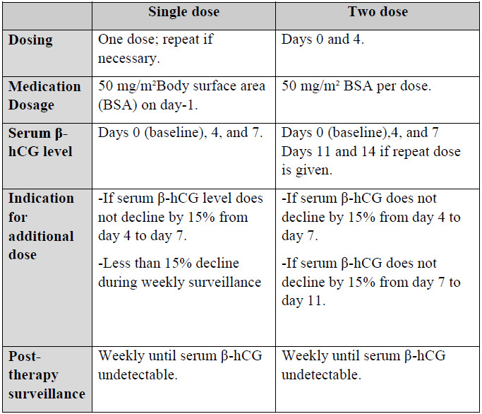
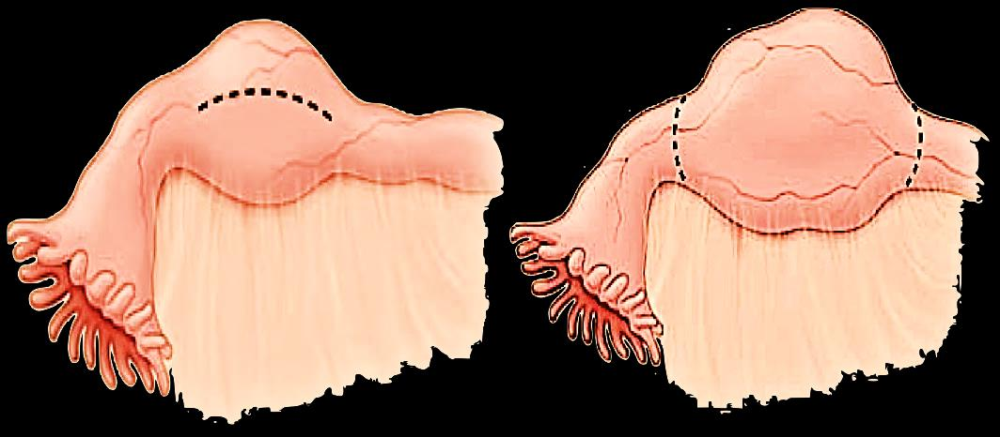

What you should be able to do after studying this chapter
To identify variable risk factors of ectopic pregnancy
To identify different types of ectopic pregnancy
To be able to describe clinical picture of ectopic pregnancy
To be able request suitable investigations for diagnosis of ectopic pregnancy
To understand the concept of discriminatory zone when both ultrasound and human chorionic gonadotrophin level are used for diagnosis of ectopic pregnancy
To be able to describe variable treatment policies of ectopic pregnancy
02
Definition, Incidence & Sites
Implantation of the fertilized ovum outside the uterine cavity
Definition
Implantation of the fertilized ovum outside the uterine cavity.
Incidence: 2% of all pregnancies.
Sites of Ectopic Pregnancy
Tubal pregnancy — the commonest site (99% of all ectopic pregnancy).
Cervical pregnancy.
Pregnancy in rudimentary horn.
Corneal (cornual) pregnancy.
Ovarian pregnancy.
Abdominal pregnancy.
Broad ligamentary pregnancy.
💎
Clinical Pearl:~99% of ectopic pregnancies are tubal — every other site (cervical, ovarian, abdominal, cornual, rudimentary horn, broad ligament) accounts for the remaining ~1% combined. Always think tubal first.
03
Etiology & Risk Factors
Anything that impairs tubal transport or the endometrial environment
PID — Pelvic Inflammatory Disease.
Previous ectopic pregnancy.
Previous tubal surgery.
Previous pelvic or abdominal surgery.
Tubal pathology.
IUCD — Intrauterine Contraceptive Device.
Tubal sterilization.
Cigarette smoking.
⚠️
Warning: The single strongest risk factor is a previous ectopic pregnancy. After one ectopic, recurrence risk rises substantially — always document and counsel.
04
Tubal Implantation Sites
Distribution within the fallopian tube
Ampulla — 80% of tubal pregnancy.
Isthmus — 12% of tubal pregnancy.
Interstitial part.
Fimbrial end.
Ampulla
80%
Isthmus
12%
💎
Clinical Pearl: The ampulla is by far the most common tubal site (80%), followed by the isthmus (12%). Interstitial and fimbrial sites are rare.
05
Clinical Picture
The clinical picture differs according to the type of ectopic pregnancy
General — Symptoms
History of missed period.
Vaginal bleeding.
Abdominal or pelvic pain.
General — Signs
General examination
Signs of pregnancy.
Abdominal
Abdominal or pelvic tenderness.
Abdominal rigidity.
Vaginal
Soft enlarged uterus.
Cervical motion tenderness (jumping sign).
Then the clinical picture differs according to the type of ectopic pregnancy:
Danger: The combination of shoulder pain + fainting + shock + tachycardia + hypotension in any pregnant woman is ruptured ectopic until proven otherwise. Resuscitate first, diagnose second.
3. Chronic Disturbed Ectopic
Recurrent lower abdominal pain.
Pelvic heaviness, rectal tenesmus, dysuria, dyschezia and dyspareunia.
Tender cervical motion.
Tender adnexal swelling.
📝
Note: Chronic disturbed ectopic mimics pelvic inflammatory disease / endometriosis. The triad of recurrent lower abdominal pain + pelvic heaviness + tender adnexal swelling in a woman of reproductive age should raise suspicion.
1. Quantitative Beta Human Chorionic Gonadotropin (β-hCG)
If the test is negative, normal and abnormal pregnancy including ectopic are excluded.
Doubling time
In normal pregnancy, the β-hCG level is doubling every 48 hours during the first 42 days of gestation.
Ectopic pregnancy usually shows less than 66% increase in β-hCG level within 48 hours.
💎
Clinical Pearl: A <66% rise in β-hCG over 48 hours in early pregnancy is highly suspicious for ectopic — normal pregnancy doubles in 48 hours during the first 42 days.
Adnexal swelling: if associated with fetal pulsation → sure sign of ectopic.
3. β-hCG + U/S — The Discriminatory Zone
Definition
HCG, at which all intrauterine pregnancies should be visible on US.
Transabdominal U/S (TAU)
6000 mIU/ml
Transvaginal U/S (TVU)
2000 mIU/ml
If the HCG is above the discriminatory zone and the uterus is empty on U/S → ectopic pregnancy.
⚠️
Warning: TVU has a 3× lower discriminatory zone (2000 vs 6000 mIU/ml) than TAU. In any woman with β-hCG above her modality's discriminatory zone and an empty uterus on ultrasound, presume ectopic pregnancy.
4. Progesterone
It is lower in ectopic than normal pregnancy (< 15 ng/ml).
5. Laparoscopy
For diagnosis and treatment.
07
Discriminatory Zone & Surgical Options
Visual reference: single-dose vs two-dose MTX protocols
The following comparison table was extracted directly from the source material and summarizes the single-dose and two-dose methotrexate protocols for medical management of unruptured ectopic pregnancy.
✓
SOURCE IMAGE — MTX PROTOCOL COMPARISON

Methotrexate (MTX) Protocol Comparison — Single-Dose vs Two-Dose Regimens
Source: Provided Material — Book Obstetrics 2025-2026-006.pdf (extracted via pdfimages -j → img-001.jpg). No watermark, on-topic clinical reference content. Used as SOURCE IMAGE (green-bordered card).
For the surgical options, the following illustration contrasts salpingostomy (incision to remove the gestational sac, preserves the tube) with salpingectomy (resection of the affected tube segment).
✓
SOURCE IMAGE — SURGICAL OPTIONS

Surgical Management of Tubal Ectopic — Salpingostomy (left, dashed line indicates linear tubal incision) vs Salpingectomy (right, dashed lines indicate resection boundaries)
Source: Provided Material — Book Obstetrics 2025-2026-006.pdf (extracted via pdfimages -j → img-002.jpg). No watermark, on-topic educational illustration. Used as SOURCE IMAGE (green-bordered card).
08
Differential Diagnosis
Two clinical scenarios to consider
From other causes of bleeding in early pregnancy (abortion, vesicular mole).
From other causes of acute abdomen during pregnancy.
09
Treatment Overview & Resuscitation
Resuscitate first in any unstable patient, then treat
Resuscitation in Unstable Patient — Immediately
2 large bore I.V lines + fluids.
Oxygen: 100% by mask.
Cardiac monitor and pulse-oximetry.
CBC and blood groups.
Blood transfusion.
🛑
Danger: In the hemodynamically unstable patient with suspected ruptured ectopic, do NOT delay resuscitation for imaging. 2 large-bore IV lines + fluids + crossmatch → theatre. Diagnosis can wait; shock cannot.
Three Treatment Policies
Option A
Expectant
Option B
Medical (Methotrexate)
Option C
Surgical
10
Expectant Management
Watchful waiting — only in highly selected, stable patients
Indications
Women who are clinically stable.
Size of the ectopic pregnancy is < 3.5 cm with no visible heartbeat on TVU.
Serum β-hCG less than 1500 IU/L.
💎
Clinical Pearl: The threshold of β-hCG < 1500 IU/L and mass < 3.5 cm on TVU is the classic expectant-management window. Above these cutoffs, success rates fall and risk of rupture rises.
11
Medical Treatment (Methotrexate)
For unruptured tubal ectopic in hemodynamically stable patients
Indications
No significant pain.
Unruptured tubal ectopic pregnancy with adnexal mass < 3.5 cm and no visible fetal cardiac pulsations.
β hCG < 1500 IU/L.
No intrauterine pregnancy.
The patient is able to return for follow up.
Reference: Single-Dose vs Two-Dose MTX
See the source-image comparison table in Section 7 for the full single-dose vs two-dose protocol, including the 50 mg/m² BSA dose, day-0 / day-4 / day-7 / day-11 / day-14 monitoring schedule, and the 15% decline threshold for an additional dose.
📝
Note: The two protocols share the same dose (50 mg/m² BSA) and the same 15% β-hCG decline criterion — the difference is the number of doses and the surveillance schedule. The two-dose regimen extends monitoring to days 11 and 14 if a repeat dose is given.
Warning: A positive fetal heartbeat, β-hCG > 5000 IU/L, or mass > 3.5 cm are relative contraindications to MTX and absolute indications for surgery.
13
Surgical Treatment
Laparotomy or laparoscopy — the two main approaches
Indications
Significant pain.
Ectopic pregnancy with adnexal mass > 3.5 cm or with visible fetal cardiac pulsations.
β hCG > 5000 IU/L.
Either of the following is done by laparotomy or laparoscopy:
Treatment Policies at a Glance
Policy
Best Candidate
β-hCG Threshold
Mass Size
Pain
Fetal Heartbeat
Expectant
Clinically stable; reliable for follow-up
< 1500 IU/L
< 3.5 cm, no heartbeat on TVU
None / minimal
No
Medical (MTX)
Stable; can return for follow-up
< 1500 IU/L
< 3.5 cm, no fetal cardiac pulsations
No significant pain
No
Surgical
Unstable, ruptured, or contraindications to MTX
> 5000 IU/L
> 3.5 cm, or with visible fetal cardiac pulsations
Significant pain
May be present
14
Salpingostomy vs Salpingectomy
Two surgical options for tubal ectopic pregnancy
See Section 7 for the surgical-options visual that contrasts the two procedures.
1. Salpingostomy
Definition: Removal of the gestational sac through linear tubal incision.
Indication
When future fertility is required.
2. Salpingectomy
Definition: Removal of the tube containing ectopic pregnancy.
Indications
> 40 years.
Completed her family.
Uncontrolled bleeding during salpingostomy.
💎
Clinical Pearl: The tubal conservation vs removal decision hinges on future fertility intent: salpingostomy when future fertility is required; salpingectomy in older patients, those who have completed their family, or if bleeding is uncontrolled during the attempt to conserve the tube.
15
Interstitial (Cornual) Pregnancy
Implantation in the proximal tubal segment within the muscular uterine wall
Interstitial pregnancy implants in the proximal tubal segment that lies within the muscular uterine wall.
Swelling lateral to the insertion of the round ligament is the characteristic anatomic finding.
Because of the proximity of these pregnancies to the uterine and ovarian arteries, there is a risk of severe hemorrhage.
Surgical management involves cornual resection either by laparotomy or laparoscopy.
The risk of uterine rupture with subsequent pregnancies is high. Thus, careful observation of these women, along with consideration of elective cesarean delivery, is warranted.
🛑
Danger: Cornual pregnancy can rupture catastrophically because of the rich anastomosis between uterine and ovarian arteries. Always plan for large-bore IV access and blood on standby, and counsel the patient about future uterine rupture risk and elective cesarean delivery in subsequent pregnancies.
16
Ovarian, Cervical, Cesarean-Scar, Heterotopic & PUL
Special ectopic types — diagnostic criteria and management
Ovarian Ectopic Pregnancy
C/P is the same as tubal ectopic. The diagnosis is by Spiegelberg criteria:
The pregnancy occupies the site of the ovary and cannot be separated from it & surrounded by healthy ovarian tissues.
The gestational sac is connected to the uterus by ovarian ligament.
No adhesion between the tube and the ovary.
Fallopian tube on the affected side is healthy & the mesosalpinx on the affected side is free from hemorrhage or masses.
Treatment: oophorectomy.
Cervical Ectopic Pregnancy
Two diagnostic criteria are necessary for confirmation of cervical pregnancy:
The presence of cervical glands opposite the placental attachment site.
A portion of or the entire placenta must be located below the entrance of the uterine vessels.
Early diagnosis of cervical pregnancy is important to avoid severe hemorrhage and subsequent hysterectomy in these women.
Treatment: medically by methotrexate or by cervical evacuation and packing. In severe bleeding, hysterectomy is done.
Cesarean Section Scar Pregnancy
Implantation of the pregnancy sac within the scar of a previous cesarean delivery. It can cause serious maternal morbidity and mortality from massive hemorrhage.
Differentiating between a cervical ectopic pregnancy and a cesarean delivery scar pregnancy can be difficult. There are four sonographic criteria that must be met to reach the diagnosis:
An empty uterine cavity.
An empty cervical canal.
A gestational sac in the anterior part of the uterine isthmus.
Absence of healthy myometrium between the bladder and gestational sac.
Imaging with three-dimensional color Doppler or magnetic resonance imaging can aid in the evaluation.
Treatment: using methotrexate, or resection by laparoscopy or laparotomy.
Heterotopic Pregnancy
Presence of a uterine pregnancy with an extrauterine pregnancy.
When a tubal pregnancy coexists with a uterine pregnancy, potassium chloride can be injected into the tubal pregnancy sac.
Methotrexate is contraindicated due to the detrimental effects on the normal pregnancy.
Pregnancy of Unknown Location (PUL)
A condition in which there is a positive pregnancy test and absent intrauterine gestational sac without any evidence of extrauterine pregnancy. This term is used till a final diagnosis is made, either an abnormal or normal intrauterine pregnancy or ectopic.
MTX, or cervical evacuation + packing; hysterectomy if severe bleeding
Cesarean scar
4 sonographic criteria (empty cavity, empty cervical canal, sac in anterior isthmus, no myometrium between bladder and sac)
MTX, or resection by laparoscopy / laparotomy
Heterotopic
Uterine + extrauterine pregnancy
KCl into tubal sac; MTX contraindicated
PUL
Positive pregnancy test, no IUGS, no extrauterine evidence on imaging
Surveillance until final diagnosis (normal IUP / abnormal IUP / ectopic)
⚠️
Warning: In heterotopic pregnancy, the uterine pregnancy is normal — MTX is contraindicated because it will harm the viable intrauterine fetus. The treatment of the tubal component is local potassium chloride injection.
Student Activity
17
Student Activity
Bedside teaching — bring ultrasound images to your tutor
Each student is requested to navigate the web in order to provide online three ultrasonographic pictures of three ectopic pregnancies to be shown to his (her) tutor in bedside teaching part of the clinical round.
📝
Note: This activity is bedside teaching — bring the Discriminatory Zone (Section 6) and the 3 Clinical Patterns (Section 5) reference tables with you to the clinical round. Use the three ultrasound images to walk through: type of ectopic → sonographic features → appropriate management.
Source Image (retained #1): "Single-dose vs Two-dose Methotrexate protocol comparison for ectopic pregnancy management" — dosing, monitoring schedule (days 0/4/7/11/14), 50 mg/m² BSA dose, 15% decline criterion, post-therapy surveillance. Extracted from the source PDF via pdfimages -j → img-001.jpg. Renamed to extracted_images/06_ectopic_pregnancy/mtx_protocol_comparison.jpg. No watermark, on-topic, used as a SOURCE IMAGE (green-bordered card).
Source Image (retained #2): "Surgical Management of Tubal Ectopic — Salpingostomy (left, linear incision) vs Salpingectomy (right, resection boundaries)" — anatomical watercolor-style illustration of fallopian tube with ectopic gestational mass. Extracted from the source PDF via pdfimages -j → img-002.jpg. Renamed to extracted_images/06_ectopic_pregnancy/salpingostomy_vs_salpingectomy.jpg. No watermark, on-topic, used as a SOURCE IMAGE (green-bordered card).
Source image omitted (off-topic): "Two white owl silhouettes on a black background". Extracted from the source PDF via pdfimages -j → img-003.jpg. Omitted because the image is decorative, has no medical content, and has no connection to ectopic pregnancy. Per the workflow rule "Avoid: Decorative stock photos / Irrelevant visuals".